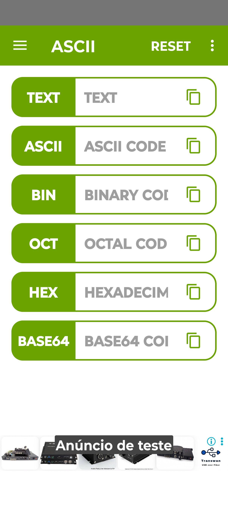
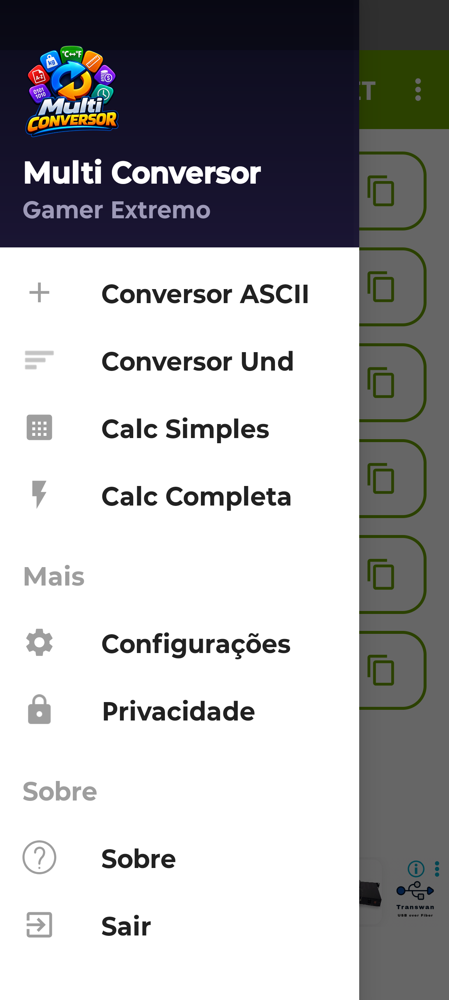
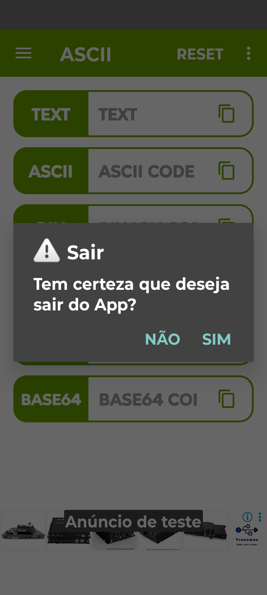

🔄 Multi Conversor
O Multi Conversor é um app multifuncional para conversão de unidades de medida, bases numéricas, ASCII e muito mais. Rápido, leve e com processamento 100% local no seu dispositivo.
✨ Funcionalidades
- Conversão de unidades de medida (comprimento, massa, volume, temperatura)
- Conversão de bases numéricas (binário, decimal, hexadecimal, octal)
- Conversão ASCII e caracteres
- Histórico de conversões salvo localmente
- Vídeos educativos via YouTube
📸 Screenshots



❓ Perguntas Frequentes
O app é gratuito?
Sim, o Multi Conversor é gratuito, com anúncios discretos que ajudam a manter o desenvolvimento.
Preciso de internet para usar?
Não para as conversões em si — elas funcionam 100% offline. Apenas os vídeos educativos do YouTube exigem conexão.
Os valores que eu digito são enviados para algum servidor?
Não. Todas as conversões são realizadas localmente no seu dispositivo. Nenhum valor digitado sai do seu celular.
Quais tipos de conversão estão disponíveis?
Unidades de medida (comprimento, massa, volume, temperatura), bases numéricas (binário, decimal, hexadecimal, octal) e ASCII/caracteres.
Como reporto um erro ou sugiro uma melhoria?
Envie um e-mail para gamerextremobr5@gmail.com ou abra uma issue no GitHub.
📜 Histórico de Versões
Versão 2.2.0
04 de Novembro de 2026 — Lançamento inicial
- Conversão de unidades de medida
- Conversão de bases numéricas
- Conversão ASCII e caracteres
- Histórico de conversões local
- Vídeos educativos via YouTube
🔒 Privacidade
O Multi Conversor não envia os valores que você digita para nenhum servidor. Todas as conversões são realizadas localmente no seu dispositivo.